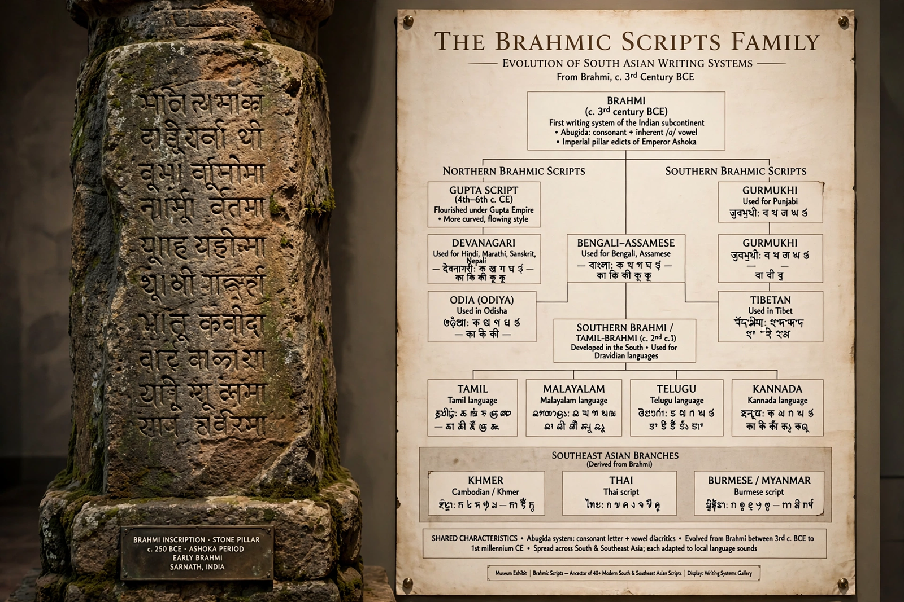

The Brahmic scripts, also known as Indic scripts, are a family of abugida writing systems used in South, Southeast and parts of Central and East Asia.
They descend from the Brahmi script attested in the edicts of Ashoka (3rd century BCE). Each consonant letter carries an inherent vowel, modified by diacritics — the abugida principle.
Brahmic scripts write Sanskrit, most Indo-Aryan languages, Dravidian languages, and languages of Southeast Asia via Indian trade and Buddhism. The Sinhala script in Sri Lanka is a distinctive rounded descendant shaped by writing on palm leaves.